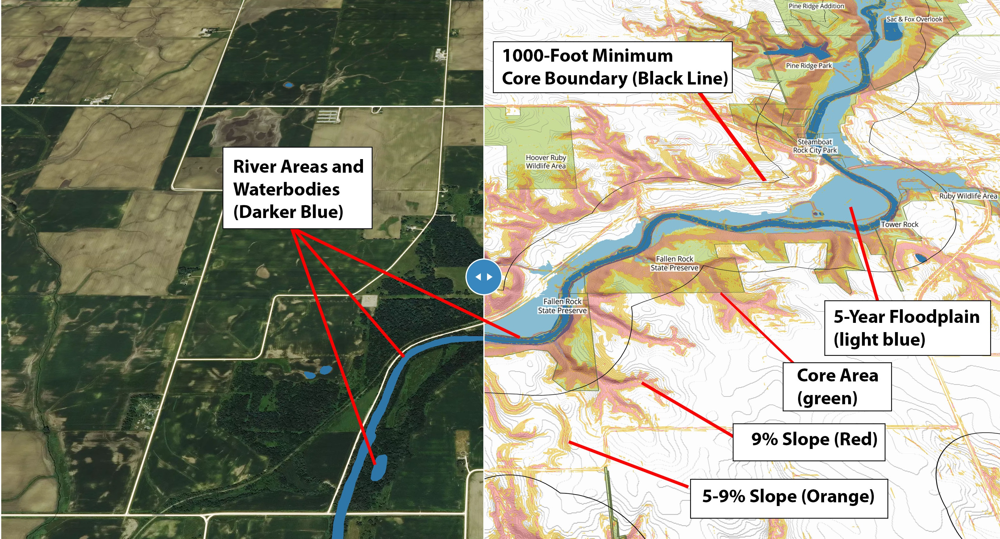

While our landscape has been ravaged, with the little left wild
scattered, it turns out that wildlife areas can be connected and
expanded, and new ones created in a way that is achievable and
practical. The land closest to rivers is often the highest value for
cores and corridors, and has the lowest land value, with steep slopes,
loose ground, and regular flooding. As water connects the breadth of
land and all life, cores and corridors form the body and veins of
wildlife habitats. They would also need the least effort with the most
benefit in preventing chemical runoff that has poisoned water and in
protecting and restoring precious soil that has been washing away and
destroying land.
This map is an indispensable for establishing wildlife cores and
corridors. It shows colored slopes, floodplains, and cropland that are
swiped back and forth for comparison with a satellite photograph that
makes the landscape visible at a given point in time. It reveal
potentials otherwise unseen, with the areas that are most suitable for
expansion and creation of core and corridor habitats, and they display
or suggest strategic and viable connections between them for wildlife
to cross. More easily than ever, people can know where to look, where
they would then walk and assess the land in person.
Outline of Map Layers:
